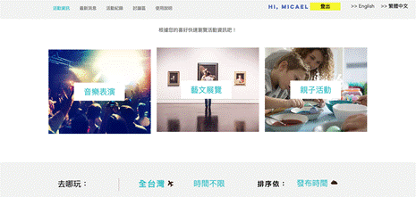

2018資料創新應用競賽
2018資料創新應用競賽
產品或服務構想書
|
參賽編號 |
OD-27350125 |
||
|
產品或服務名稱 |
踏晴 |
||
|
市場(使用)族群 |
想找各種類型活動資訊的使用者 |
||
|
產品或服務簡介 |
在日常生活中是否常發生想出去玩卻不知道要去哪？覺得網路上找資料過於分散、不確定興趣適合什麼活動？得知活動情報卻早已過期？讓「踏晴」帶您細細品味世界各地的精彩活動。本系統有三大特點： 1. 精彩活動即時查詢：提供使用者最新即時各種類型活動動態，讓使用者能隨時隨地查詢各地活動資訊，輕鬆瀏覽新鮮事。 2. 個人活動小秘書：提供個人活動整合行事曆管理，結合行事曆小秘書貼心提醒功能，再也不用擔心忘記任何安排好的活動。 3. 天氣即時預報：使用者不再需要一邊看新聞一邊安排旅程，透過此系統，我們以最新政府開放資料分析預測目的地天氣，不用再煩惱天氣是晴是雨，快速安排旅行很輕鬆。 |
||
|
資料來源 (請詳列) |
資料集提供機關名稱 |
資料集名稱 |
資料集連結 |
|
交通部觀光局 |
觀光活動資料 |
http://ptx.transportdata.tw/MOTC/v2/Tourism/Activity?$top=30&$format=xml |
|
|
文化部 |
親子活動 |
https://data.gov.tw/dataset/6014#r1 |
|
|
文化部 |
綜藝活動 |
https://data.gov.tw/dataset/6009#r1 |
|
|
交通部氣象局 |
一般天氣預報-一週縣市天氣預報 |
http://opendata.cwb.gov.tw/datadownload?dataid=F-C0032-005 |
|
|
交通部氣象局 |
http://opendata.cwb.gov.tw/datadownload?dataid=F-C0032-003 |
||
|
產品或服務說明 |
壹、 起與創作目的 隨著社會文化水準的提升，人們參與各種綜藝、藝文活動的意願越來越高。大大小小的活動不斷推出，人們透過參與各類型的藝文活動來擴展文化的視野以及提升生活品質，因此，無論地方政府或是民間組織也漸漸透過贊助各種藝文綜藝活動來提升社會大眾心中的形象，綜藝藝文產業的經濟利益已不可小覷。另一方面，參與活動的民眾，對於天氣狀況極為在意，民眾會想知道，在這個時間點過去天氣是否良好，會不會突然下起一陣大雨而導致塞車或是活動取消。透過本系統便能簡單又迅速地解決這個問題。 在對市場上現有的系統進行廣泛的分析與調查後，我們的團隊決定解決上述問題，開發一個活動分享平台，結合政府所提供的開放資料，讓使用者能夠迅速的依據時間、興趣找尋相關的活動，再結合天氣預報功能，讓使用者能透過一個平台便能規劃出最佳、最符合需求的旅遊行程。 本系統可說是結合了天氣預報與活動資訊查詢的完美契合，滿足了現代人對於藝文活動的需求，也滿足了使用者想了解天氣狀況，卻得在不同系統上搜尋資料、自行整合，這樣的結合與創新是市面上所沒有的，相信這樣多功能的設計也使在同類的系統中能獲得更高的使用率。 貳、市場調查與定位 在這二十一世紀，愈來愈多的民眾會透過參與各類型的藝文活動來擴展視野、提升生活品質。然而網路資訊過於發達使得資訊過於分散，不方便聚焦、尋找想要的資訊。我們對市面上現有的活動平台進行調查，以功能面大致可分為以下三類： 一、遊憩景點查詢：提供戶外踏青各景點的地址、照片以及聯絡方式等相關資訊，例如：台北一遊未盡、城市通 。 二、遊客反饋：提供民眾分享到各景點的遊樂心得，例如：TripAdvisor。 三、主題活動資訊：以提供特定主題活動售票資訊為導向的活動資訊平台，例如： KKTIX、華山1914文化創意產業園區。 雖然目前市面上已有許多網站提供活動資訊，功能卻仍不夠完善。本團隊以快速搜尋、輕鬆規劃為開發概念，將各地精彩活動查詢、天氣預報以及行事曆小秘書等功能結合，讓使用者不僅能透過此系統輕鬆查詢活動資訊，還能獲得最新即時天氣預報、管理個人活動行事曆，讓民眾能將各種活動輕鬆融入日常生活。 參、使用對象 無論是藝文活動的愛好者，或是下課下班後想找地方休憩，想找個地方為心靈充電的民眾，都能透過此系統，快速瀏覽各地精彩活動資訊。對於網路上資訊過於分散，覺得不知從何搜尋、老是遇到得知情報卻已過期很苦惱的使用者都能透過此系統輕鬆一手掌握最新資訊不漏接。 肆、產品或服務特色說明 本系統整合各地精彩活動並透過政府開放資料之數據分析提供最新天氣預報，讓你隨時隨地都能根據自己的興趣，規劃屬於自己的旅程，而不用一邊查天氣預報一邊規劃多個旅行備案。除了輕鬆規劃個人旅程以外，本系統的行事曆小秘書提供您貼心的活動行程提醒功能，讓您輕鬆管理活動行事曆。 伍、產品或服務功能(請條列之) 1. 整合各地精彩活動 2. 最近即時天氣預報 3. 即時分享活動資訊 4. 分享最新活動免費票券 5. 個人活動行事曆規劃 陸、未來規劃(如功能擴充等) 系統管理員亦能夠透過雲端資料庫進行大數據分析，進行各地區、景點的熱門瀏覽統計分析、各地區、年齡之使用者旅程偏好之統計，未來期望透過結合大數據分析系統之結構與非結構化資料，提供個人化旅程小秘書提供最適合不同使用者的旅程推薦方案。 增加結合捷運、公車、公共自行車的路線規劃功能，更加善用公共交通設施，協助觀光客更能夠妥善使用這些設施，並且有更好的工具改善交通部熟悉的問題，既能節省相關的時間浪費，也能省去搭計程車的費用。 |
||
|
產品或服務 雛型設計圖 |
 |
||
參賽證明：